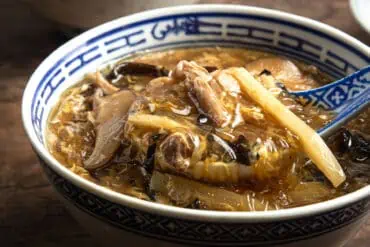

Imitation Shark Fin Soup

Description
Hong Kong Style imitation shark fin soup!
Street food gourmet ^^
Main ingredients
- 1lb pork shoulder
- 20g of dried shiitake and 10gram of dried wood ear mushrooms
- 42g Chinese vermicelli
- 1 tsp ginger, 3 garlic cloves
- 80g bamboo shoots
- 1 large egg beaten
Soup
- 4 cups unsalted chicken stock
- 2 cups shiitake mushroom stock
- 2 tbsp soy sauce
- 1 tsp roasted sesame oil
- 1/2 tsp fine salt
- 5g rock sugar or granulated sugar
- 1/8 tsp ground white pepper
- thickener: 5tbsp cornstarch + 1/3 cup cold water mixed thoroughly
Directions
- rehydrate dried mushrooms and vermicelli
- squeeze liquid out of shiitake mushrooms, remove stems,
slice thinly, save liquid for later
- roughly chop wood ear mushrooms
- cut rehydrated vermicelli to 5" long each
- cook pork shoulder until brown on all sides, set aside
- deglaze pot you browned the pork shoulder in with mushroom stock
- shred pork
- saute bamboo shoots, mushrooms, ginger, and cloves
- put all veggies in pressure cooker
- put all seasonings under Soup (except for thickener) in pressure cooker
- pressure cook this (keep pork aside still) for 18min
- turn off pressure cooker, throw in pork, thickener, and beaten egg while still hot, stir in a circle
- serve with drizzled sesame oil on top
Home